数据来源：知识星球「南半球聊财经」星主 Jason 不跪 当日发帖 抓取时间：2026-06-16（美西时区） | 当日发帖数：16 篇 | 配图：35 张
今日要点速览
今天 Jason 集中转发了一批券商与外媒研报，主题高度聚焦在**"中国 5 月经济数据偏弱"**这条主线上：华创、花旗、申万、兴业、华泰从不同角度指向同一个结论——增长动能在二季度放缓（GDP 约 4.4%），而且是"价格在涨、需求不跟"的滞胀式偏弱，房价（高盛：二手房一年再跌 5–10%）、白酒、通信器材消费、民间投资全线疲软。
第二条线是全球货币与避险：日本央行加息至 1%（1995 年以来首次）、世界黄金协会央行调查显示创纪录比例的央行计划增持黄金并看空美元、瑞银给出 2026 年资产配置（黄金均价看 5000 美元、做多德债）。
第三条线是地缘政治：美伊和平协议草案文本流出、内塔尼亚胡因这份以色列多数人反对的协议而被国内鹰派"讨伐"，市场用 Polymarket 给中东永久和平只打了 18% 的概率。
此外还有几篇结构性观察：摩根士丹利看空欧洲传统车企（中国车企冲击）、皮尤调查显示美国双职工家庭创纪录、bloomberg 拆解中国对外援助预算。整体基调是**"对内偏空、对外看多黄金、对地缘谨慎乐观"**。
第 1 篇 16:15 #经济数据
帖子原文
华泰：新经济行业的盈利验证，对旧经济既有点状传导的潜力，也有一定的挤出影响，比如新动能发展引发了部分资源品、高端制造链等行业涨价潮，传统行业面临成本抬升、要素竞争等效应的影响。再比如资本市场的虹吸效应。短期重复性岗位替代已在发生，中等技能认知岗位正加速受冲击，部分高技能岗位也逐步从"辅助"走向"替代"。另外新动能在税收盘子中的占比相对较低。目前七大类传统行业合计贡献了约 75% 的生产税净额。#经济数据

一句话核心：AI / 新经济在创造繁荣的同时，正在"挤出"旧经济的利润、就业和税收，而税收的大头仍压在传统行业身上。
背景与关键数据：所谓"新动能"指 AI、半导体、新能源、高端制造这类高增长行业；"旧经济"指地产、传统消费、低端制造等。华泰的观点是：新经济虽好，但它抢走了资源（涨价潮抬高了传统行业成本）、抢走了资本（资金都涌向科技股，这就是"虹吸效应"）、也在抢就业（重复性和中等技能岗位被 AI 替代）。关键数字是"七大类传统行业贡献约 75% 的生产税净额"——意思是政府税收主要还是靠老行业撑着，新经济交的税还很少。
图片解读：图表 24 标题"上市公司薪酬增速和上市公司净税费同比增速（%）"，横轴是 2019Q1 到 2026Q1。深蓝线（薪酬增速）从 2021Q1 的高点约 +27% 一路下滑到 2026Q1 的约 +4%；黄线（净税费增速）剧烈波动后同样趋势性下行，到 2026 年初接近 0 甚至转负。两条线一起往下，说明上市公司给员工涨薪的力度在减弱、上缴税费的增长也几乎停滞——印证了"旧经济被挤压、税基增长乏力"的判断。
为什么重要 / 对市场和经济的含义：这是一个"结构性隐忧"。如果税收主要靠传统行业、而传统行业又被新经济挤压，那么财政收入增长会承压，政府刺激的弹药就更紧张。对市场而言，这强化了"AI 主线一枝独秀、旧经济估值受压"的二元分化格局。
延伸知识：这其实是经济学里"创造性破坏"（Schumpeter 的 creative destruction）的现实版——新技术摧毁旧产业的同时创造新产业。问题在于"破坏"是即时的（裁员、利润下滑马上发生），而"创造"的好处（新岗位、新税源）需要时间才能补上，中间这段错位期就会出现"增长但体感差"的现象。
第 2 篇 16:08 #经济数据
帖子原文
摩根斯坦利：中国车企在欧洲的扩张还处在早期阶段，未来对欧洲传统车企盈利的冲击会继续加大。欧洲车企在 EU5 市场的份额已经从 2020 年的 72% 降至 2025 年的 67%，我们预计到 2027 年会进一步降至 62%。这意味着欧洲大众化车企 2027 年盈利预期存在超过 10% 的下修风险。市场对欧洲车企的盈利预期仍然太乐观。最受压力的是雷诺、Stellantis 和大众；奔驰和宝马短期相对安全，但也会逐渐受到中国车企在 SUV、插混和入门豪华市场的价格压力。欧洲消费者对本土品牌仍有忠诚度，尤其在豪华车领域更明显。德国人买德国车、法国人买法系车、意大利人买 Fiat/Alfa/Jeep 等 Stellantis 品牌，这种本土品牌认知仍然存在。但价格正在测试品牌忠诚度。BCG 调查显示，欧洲约 10%–20% 的消费者愿意考虑购买中国车，高于中国车企目前市场份额。年轻消费者品牌忠诚度也明显低于老年人。品牌忠诚度能延缓冲击，但不能消灭冲击。欧洲车企将在 2026–2028 年大量推出新车型，希望通过产品周期修复销量和份额。但问题在于：中国车企新车发布速度仍然更快。#经济数据
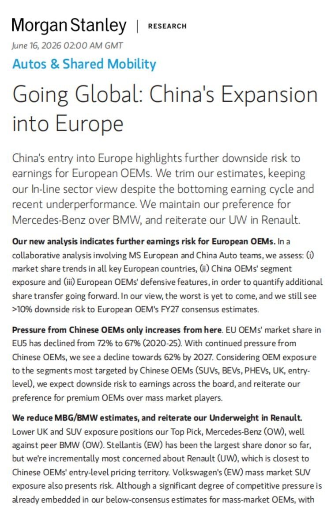
一句话核心：中国车企正在慢慢蚕食欧洲本土车企的地盘，市场对雷诺、Stellantis、大众的盈利预期"太乐观"，未来两年可能被下修 10% 以上。
背景与关键数据：EU5 指欧洲五大汽车市场（德、法、英、意、西）。欧洲本土车企在自家市场的份额从 2020 年 72% → 2025 年 67% → 预计 2027 年 62%，三年再丢 5 个百分点。BCG 调查的 10–20% 消费者"愿意考虑中国车"是一个领先信号——目前中国车的实际份额还低于这个意愿比例，说明渗透空间尚未释放完。
图片解读：图为摩根士丹利英文研报首页《Going Global: China's Expansion into Europe》，副标题强调"中国车企扩张对欧洲 OEM（整车厂）盈利构成下行风险"。正文重申了份额从 72% 降到 67%、并将进一步下滑的核心论点，是帖子文字的英文出处。
为什么重要 / 对市场和经济的含义：对投资者，这是看空欧洲传统汽车股（雷诺、Stellantis、大众）、相对看好中国新能源车出口链的逻辑。对宏观，它揭示了一个长期趋势：中国制造正从"低价代工"升级到"在发达国家本土市场抢高端份额"，这会持续给欧洲的贸易保护主义（关税）火上浇油。
延伸知识："品牌忠诚度能延缓但不能消灭冲击"是一个很好的产业规律。可以类比当年日本车（丰田、本田）进入美国市场：一开始美国人也只买美国车，但靠性价比和质量，用了 20 年把美国本土车企份额打下来。中国车在欧洲可能正在重演这个剧本，只是节奏更快（因为电动化是一次"换赛道"，本土车企的燃油车技术优势被清零了）。
第 3 篇 16:02 #经济数据
帖子原文
华创：5 月 GDP 增速约为 4.4% 左右。按照 4-5 月经济动能外推，则二季度 GDP 有望实现 4.4% 左右。下半年由于基数更低，叠加二季度既有政策在逐步落地稳投资，预计全年达标 4.5%-5.0% 难度不高。#经济数据
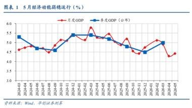
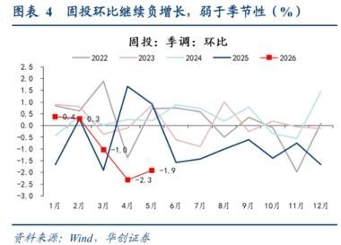
一句话核心：5 月经济动能放缓，单月 GDP 约 4.4%，但华创认为靠低基数和政策托底，全年 4.5–5% 的目标问题不大。
背景与关键数据：中国官方只公布季度 GDP，券商会用工业、消费、投资等高频数据"拟合"出一个月度 GDP 估算。4.4% 低于全年 5% 左右的目标线。"低基数"指去年同期数字本身就低，今年同比自然容易好看——这是一种"数字上的顺风"，不代表真实动能强。
图片解读：
- 图 1「5 月经济动能弱稳运行」：两条线分别是"月度 GDP（拟合）"和"季度 GDP（公布）"，2024-03 到 2026-05。数值在 4.4%–5.5% 之间震荡，最新 5 月读数回落到约 4.4%，处在区间下沿——所以叫"弱稳"（偏弱但还稳得住）。
- 图 4「固投环比继续负增长，弱于季节性」：画的是固定资产投资的环比（季调），不同颜色代表不同年份。红色 2026 年线的几个点标注为 -0.4、+0.3、-1.0、-2.3、-1.9，明显低于往年同期，说明今年的投资动能比正常季节性更差。
为什么重要 / 对市场和经济的含义：4.4% 这个数字卡在目标线下方，意味着下半年需要政策加力（降准、专项债、稳投资）才能达标。这正是后面几篇（兴业、花旗）讨论"会不会降准降息"的背景。投资环比转负尤其值得警惕，因为投资是中国经济最重要的"逆周期抓手"。
延伸知识："同比 vs 环比"是看经济数据的基本功。同比（和去年同月比）受基数影响大，容易被"低基数"美化；环比（和上个月比）剔除了基数效应，更能反映当下的真实动能。图 4 用环比、而且和历年季节性对比，就是为了戳穿"同比看着还行、其实环比在恶化"这层窗户纸。
第 4 篇 15:56 #金融
帖子原文
瑞银：美伊和平安排如果兑现，将利好风险资产，压低油价、收益率和美元，并推高股票；但本周 14 家央行会议，尤其是美联储 Warsh 首次 FOMC 沟通，可能形成鹰派抵消。宏观上，能源冲击使我们下调 2026 年全球增长 30bp、上调通胀 90bp，但 AI/科技贸易规模巨大，正在抵消部分冲击。资产配置上，我们继续做多 10 年德债，预计 2026 年底美国 10 年期 4.25%、德国 2.75%、新西兰 4.20%；外汇上仍认为美元有结构性支撑，年底 USD/CNY 7.00、NZD/USD 0.62；黄金均价 5000 美元/盎司。布伦特四季度 90 美元。股票若中东冲突可信结束，MSCI ACWI 目标可从 1120 上调至 1190；信用市场则进入晚周期分化，高质量好于低质量，风险资产不是无风险全面牛市，但信用市场已经在提醒风险分层。#金融
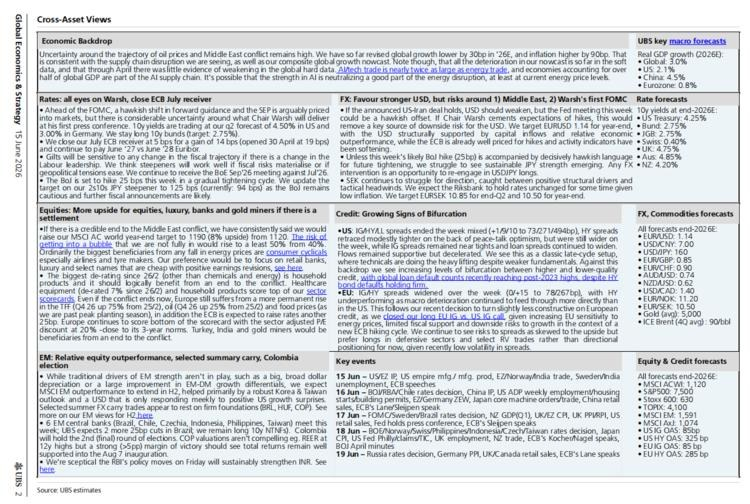
一句话核心：瑞银给出 2026 年全景配置——和平利好风险资产，但能源冲击+央行鹰派是逆风；策略上看多黄金（均价 5000 美元）、做多德债、对美元仍偏正面。
背景与关键数据：几个要点拆开看：①"下调增长 30bp、上调通胀 90bp"——bp 是基点，1bp=0.01%，所以是下调 0.3 个百分点增长、上调 0.9 个百分点通胀，这是典型的"滞胀式"修正（增长降、通胀升）。②债券收益率预测（美国 10 年 4.25%）是判断利率走向。③"MSCI ACWI 从 1120 上调到 1190"是全球股指目标点位。④"晚周期分化"指经济周期接近尾声时，好公司和差公司的信用利差会拉开。
图片解读：图为瑞银研报的密集文字汇总表（多栏研究要点 + 预测数字表），分辨率有限不易逐字看清，但内容与帖子正文一一对应：左侧是宏观与资产配置论述，右侧栏位是各类资产（利率、汇率、商品）的年底目标价。核心可读信息即正文列出的那组预测值。
为什么重要 / 对市场和经济的含义：这是一份"机构怎么下注 2026 年"的路线图。黄金 5000 美元的均价预测相当激进（配合后面第 14 篇央行增持黄金的逻辑）；"做多德债"反映对欧洲经济偏弱、利率下行的判断；"美元有结构性支撑"则是逆共识观点（很多人看空美元，瑞银不完全认同）。
延伸知识："风险资产不是无风险全面牛市，信用市场已在提醒风险分层"是一句很有信息量的话。信用利差（垃圾债收益率减国债收益率）是市场的"恐惧温度计"：利差收窄=市场乐观，利差走阔=市场开始担心违约。当股市还在涨、但信用利差悄悄走阔时，往往是周期见顶的早期预警——这就是"晚周期"信号。
第 5 篇 15:45 #房价
帖子原文
高盛：各口径的二手房价追踪，过去一年二手房价格仍下跌约 5%–10%。#房价
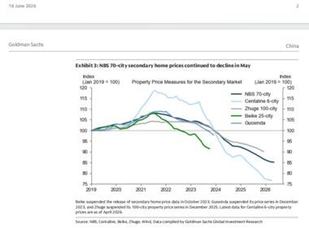
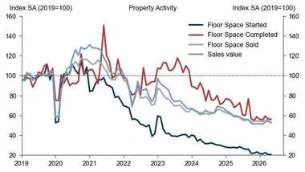
一句话核心：不管用哪个数据源看，中国二手房价过去一年还在跌 5–10%，房地产仍未止跌。
背景与关键数据：官方的"70 城房价指数"经常被认为偏温和，所以高盛同时对比了贝壳、中原、诸葛找房等多个民间口径来交叉验证，结论一致——还在跌。
图片解读：
- 图 1「NBS 70 城二手房价 5 月继续下跌」：多条线分别是 NBS 70 城、中原 6 城、诸葛 100 城、贝壳 25 城、国信达，全部以 2019 年 1 月=100 为基准。所有曲线在 2021 年见顶（约 115–120）后一路下行，到 2025–2026 年普遍跌回 85–95 区间，几乎抹掉了 2019 年以来的全部涨幅甚至更多。
- 图 2「房地产活动」：四条线是新开工（Floor Space Started，深蓝）、竣工（红）、销售面积（Sold）、销售额（Sales value）。其中新开工塌陷得最惨，从 100 以上一路跌到约 30，意味着开发商几乎停止了新项目——这是供给端长期收缩的信号。
为什么重要 / 对市场和经济的含义：房价持续阴跌会通过"财富效应"压制居民消费（房子是中国家庭最大资产，资产缩水就不敢花钱），也拖累地方政府土地财政。新开工塌到 30 说明地产对 GDP 和上游（钢铁、水泥、家电）的拉动还在收缩，这是 5 月经济偏弱的根源之一。
延伸知识："财富效应"（wealth effect）：当人们觉得自己更富有（房价/股价涨）时会更敢消费，反之则捂紧钱包。中国居民财富约 60% 压在房产上，所以房价的边际变化对消费信心的影响远大于股市。这也是为什么"止跌回稳"被反复写进政策目标——它不只是房地产问题，而是整个内需的"心理锚"。
第 6 篇 15:41 #经济数据
帖子原文
申万宏源：除了高基数、国补退坡，价格上涨对需求的次生冲击也在拖累消费，比如通讯器材跌幅较大，与通信工具 CPI 快速上涨、影响需求有直接关系。#经济数据
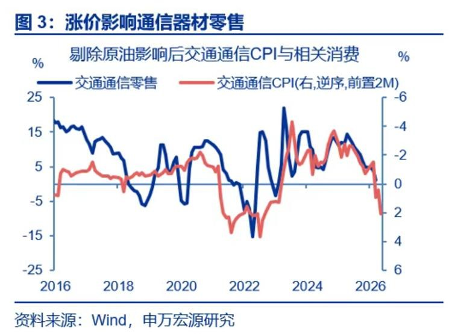
一句话核心：手机/通信设备卖不动，部分原因是它们涨价了——价格一涨，需求就被劝退。
背景与关键数据："国补退坡"指国家补贴（以旧换新等）力度减弱，去年补贴撑起的销量今年没了。"次生冲击"是申万的核心观点：除了基数和补贴，涨价本身在二次伤害需求——东西贵了，大家就少买或推迟买。
图片解读：图 3「涨价影响通信器材零售」，横轴 2016–2026。蓝线是"交通通信零售"增速，红线是"交通通信 CPI"（右轴，且做了逆序+前置 2 个月处理）。把 CPI 逆序后两条线高度吻合，直观说明：通信产品价格涨（CPI 上行）→ 约 2 个月后零售走弱，价格和需求负相关的关系很清晰。
为什么重要 / 对市场和经济的含义：这条戳破了一个误区——不是所有"涨价"都是好事。在需求疲软的环境里，涨价（哪怕是成本推动的）会进一步压垮销量，形成"价涨量跌"的恶性组合。这正是花旗后面说的"滞胀式"困境的微观证据。
延伸知识：经济学里这叫需求价格弹性——价格变动对需求量的影响程度。通信器材、家电这类"可选消费/耐用品"弹性较高（可买可不买、可早可晚），涨价容易劝退；而食品、医疗这类"必需品"弹性低（再贵也得买）。当经济偏弱、收入预期下降时，可选消费品的价格弹性会变得更高，涨价的反噬就更猛。
第 7 篇 15:37 #TAX
帖子原文
bloomberg：中国在 2024 年预算中为"对外援助"拨款约 249 亿元人民币（36 亿美元）。#TAX
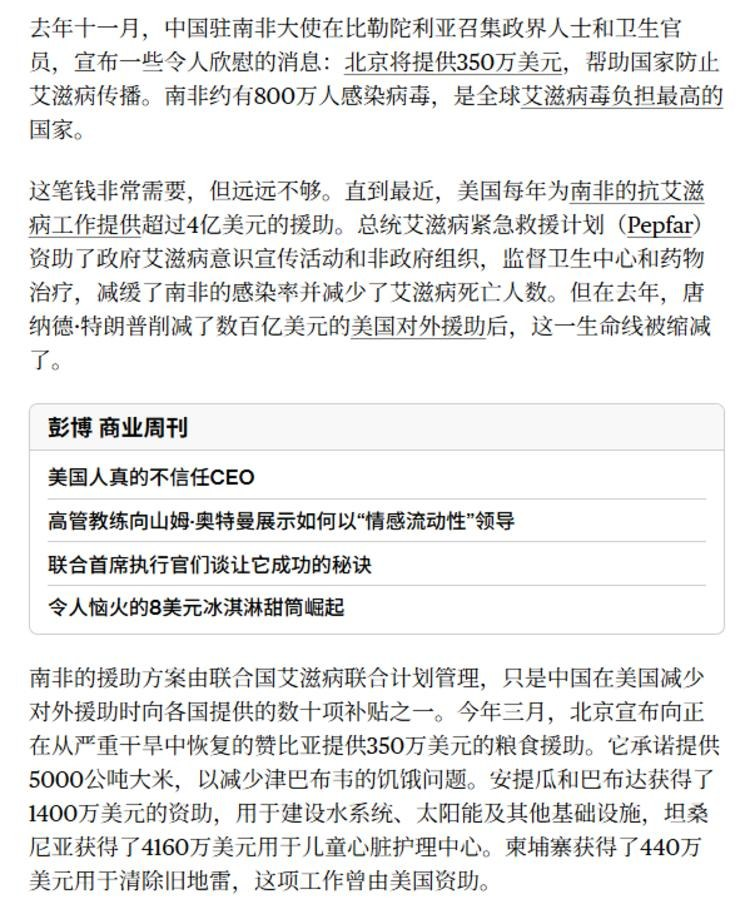
一句话核心：中国 2024 年对外援助预算约 249 亿人民币（36 亿美元），bloomberg 拆解了这笔钱的规模与去向。
背景与关键数据：249 亿人民币放在中国一年 20 多万亿的财政盘子里占比极小（约万分之一），但对外援助一向是观察一国地缘战略的窗口。帖子归类为 #TAX（税收/财政）标签，说明 Jason 关注的是"财政如何分配"这个角度。
图片解读：图为 bloomberg 中文报道截图，正文讨论中国对外援助的金额、与美国等国的对比，以及"影子 CEO"等小标题（应指援助背后的决策与执行机构）。截图文字密度高、分辨率有限，细节难以逐字辨认，核心数字即正文的 249 亿元/36 亿美元。
为什么重要 / 对市场和经济的含义：对外援助是"软实力"和"一带一路"战略的财政体现。在国内财政吃紧、要求"过紧日子"的背景下，对外援助的规模与节奏变化，往往透露官方对"内需 vs 外交"优先级的权衡。这是宏观叙事里的一块拼图，对资产价格直接影响不大，但对理解政策取向有参考价值。
延伸知识：对外援助通常分为无偿援助、无息/低息贷款、优惠出口信贷三类。中国的对外援助很多是"贷款+基建"绑定模式（修港口、铁路），既是外交也是为本国工程企业找订单。理解这一点，就能明白为什么对外援助预算虽小，却能撬动远大于其金额的地缘和商业影响。
第 8 篇 15:34 #经济数据
帖子原文
高盛：即使 2025 年端午基数较低，2026 年端午白酒动销预期仍偏弱。渠道反馈显示，经销商对茅台、五粮液零售增长预期从此前 20%–30% 下修到 10%–20%；节前备货动作不积极，批价整体平淡。飞天茅台批价相对稳定，但五粮液、国窖 1573 仍偏软，非标茅台也承压。2026 年初至 6 月 12 日，中国白酒公司股价普遍下跌。茅台年初至今约 -6%，是相对抗跌的；而很多次高端和区域酒跌幅更大，市场不是不知道白酒弱，很多股票已经反映了相当多的坏消息。问题在于，估值便宜能不能等到基本面拐点。目前仍是控货稳价、防库存和等待中秋国庆验证的阶段。#经济数据
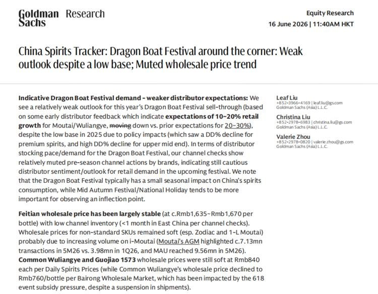
一句话核心：端午白酒动销疲软，经销商把增长预期砍了一半，股价已跌（茅台年内 -6%），现在是"等中秋国庆拐点"的煎熬期。
背景与关键数据："动销"=终端实际卖出的速度（区别于厂家压给经销商的"出货"）。"批价"=经销商之间的批发价，是白酒景气度的核心晴雨表，飞天茅台批价被视为行业风向标。增长预期从 20–30% 下修到 10–20%，几乎腰斩。"非标茅台"指生肖酒、精品酒等非标准飞天产品。
图片解读：图为高盛《China Spirits Tracker》研报首页，标题点明"端午临近但需求疲软、批价走平"。正文用英文复述：飞天茅台批价稳定在约 1635–1670 元/瓶，五粮液、国窖 1573 仍偏软（约 840 元水平），与帖子中文一致。
为什么重要 / 对市场和经济的含义：白酒是中国消费的"信心指标"和高端商务/送礼需求的代理变量。白酒弱 = 商务活动和居民消费降级的缩影。高盛点出的"坏消息已被股价反映、但拐点未到"是经典的左侧布局难题——便宜不等于会涨，得等基本面真的转向。
延伸知识：白酒投资有一个独特的"渠道库存"周期。厂家为了维持业绩，会向经销商压货（出货增长好看），但如果终端动销跟不上，库存就堆在渠道里，最终逼批价下跌。所以看白酒不能只看厂家收入，要看批价 + 渠道库存这两个"体温计"。当下"控货稳价"就是厂家主动减少压货、保护批价的防守动作。
第 9 篇 15:30 #金融
帖子原文
bloomberg：协议 14 条文本 #金融
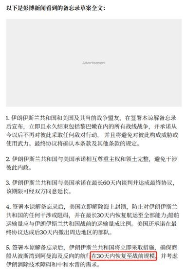
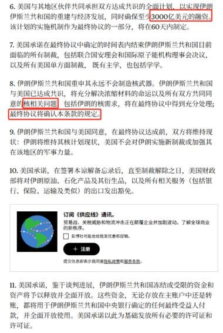
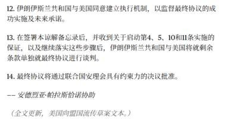
一句话核心：bloomberg 流出的美伊（及相关方）和平协议草案备忘录全文，共 14 条。
背景与关键数据：这是当下最大的地缘事件——美国与伊朗的停火/和平安排。帖子只给了一句话，正文全在图片里（协议条款）。
图片解读：三张图是协议草案的中文译本全文（第 1 条到第 14 条）：
- 图 1（1–5 条）：双方承诺尊重主权与领土完整、避免干涉内政；在签署后最长 60 天内达成最终协议；美国承诺在 30 天内恢复航运至全部规模（图中红框标注"30 天内恢复至战前规模"）。
- 图 2（6–11 条）：涉及解除部分制裁、船舶通行、争端解决机制等条款，有"60000 美元以内…"等细节红框标注。
- 图 3（12–14 条）：建立联合执行/监督机制，最终协议需经联合国安理会有约束力决议批准；署名"安德烈亚斯·帕拉西奥恰协助"。结尾注明"美国向盟国流传草案文本"。
为什么重要 / 对市场和经济的含义：美伊和平 = 中东风险溢价下降 = 油价下行、避险情绪缓解、风险资产受益（这正是第 4 篇瑞银说的"和平利好风险资产、压低油价"）。但协议还是"草案"、要走 60 天谈判 + 安理会批准，落地有不确定性，所以市场不会完全定价。
延伸知识：地缘冲突对市场的影响主要通过"风险溢价"这个渠道。冲突升级时，投资者要求更高回报来持有风险资产（股票被抛、油价和黄金被买）；和平信号出现时，风险溢价回落，资金回流股票、压低油价。霍尔木兹海峡（全球约 1/5 原油运输通道）是这里的关键——它通不通，直接决定油价的地缘风险定价。
第 10 篇 15:22 #金融
帖子原文
zerohedge：正如普遍预期的那样，本周日本央行将政策利率上调 25 个基点，至 1%，上一次达到 1% 是在 1995 年，当时央行正处于降低借贷成本的过程中，以应对 1980 年代末日本资产泡沫破裂。为抵消加息带来的鹰派情绪，日本银行还表示，自 2027 年 4 月起将停止减少每月日本国债购买，以约 2 万亿日元（125 亿美元）的速度趋于平稳。这一举措也被市场广泛预期。日本银行的资产负债表将继续缩小。决议公布后日元兑美元持平约 160.2 日元，日经 225 指数均线突破 7 万点，创历史高位后回落。#金融
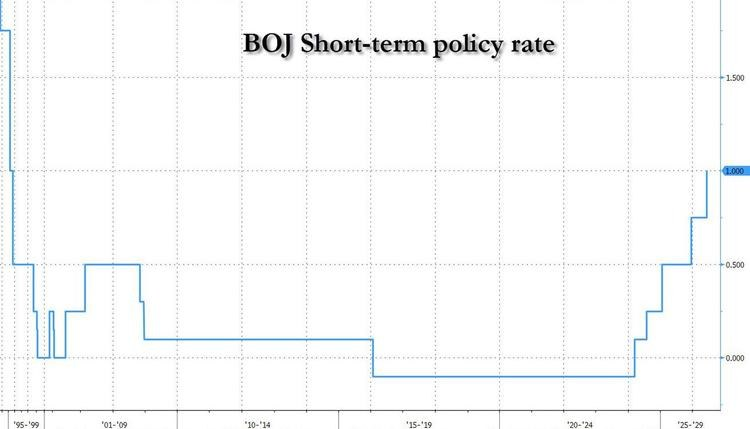
一句话核心：日本央行加息 25 个基点到 1%，这是 1995 年以来首次，标志着日本"超低利率时代"实质性结束。
背景与关键数据：1% 听起来很低，但对日本是历史性的——过去近 30 年日本利率长期在 0 甚至负利率徘徊。"停止缩减国债购买（QT 放缓）"是给市场的安抚：一手加息（鹰派），一手稳住购债节奏（鸽派），软硬兼施。日元持平 160.2、日经突破 7 万点后回落，说明加息已被充分预期、靴子落地。
图片解读：图为「BOJ Short-term policy rate（日本央行短期政策利率）」长期走势，横轴从 1995 年延伸到 2029 年。曲线显示：1990 年代末快速降到 0 附近，此后近 20 年贴地（甚至负值），直到最近几年阶梯式抬升，最右端跳升到约 1.000——一眼可见这是几十年未见的转折。
为什么重要 / 对市场和经济的含义：日本是全球最大的"廉价资金来源国"。多年来投资者借入低息日元、去买全球高息资产，这就是**"日元套息交易（carry trade）"**。日本加息会抬高借日元的成本，可能引发套息交易平仓 → 全球资产被动抛售（2024 年 8 月就上演过一次"套息平仓式"暴跌）。所以 BOJ 的一举一动是全球流动性的"总闸门"之一。
延伸知识：套息交易的原理——借低息货币（日元 0%）、换成高息货币资产（比如美债 4%），赚利差 + 可能的汇兑收益。它在平静时期很赚钱，但本质是"在压路机前捡钢镚"：一旦日元升值或利差收窄，平仓踩踏会非常剧烈。日本利率正常化，意味着这套延续多年的全球资金游戏规则正在改写。
第 11 篇 15:09 #经济数据
帖子原文
花旗：中国似乎正在经历国内需求层面的滞胀风险。把零售销售、固定资产投资和通胀放在一起看，5 月零售和投资明显向下，而 PPI 回升、CPI 稳定。这比普通 deflation 更麻烦，因为普通 deflation 至少意味着价格下行；而现在是部分价格上行，但居民收入和消费不跟，企业利润率被夹在中间。以旧换新补贴相关品类仍然拖累消费。5 月补贴品类对零售的拖累约 -2.2 个百分点，4 月为 -2.0 个百分点。我们维持二季度 GDP 4.5%、全年 4.7% 的预测，但认为政策只会加快定向支持和"六大网络"投资，不会推出全面大刺激。#经济数据
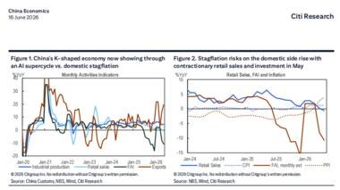
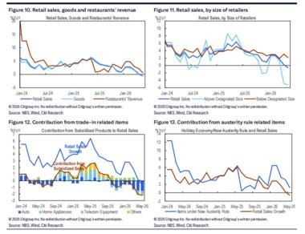
一句话核心：花旗警告中国出现"滞胀式"困境——价格在涨、但收入和消费不跟，企业利润被两头夹击；且预计政策只会"精准滴灌"，不会大水漫灌。
背景与关键数据：几个名词：PPI=工业品出厂价格（上游/企业端），CPI=居民消费价格（下游/消费端）。"PPI 回升、CPI 稳定，但零售和投资向下"——成本端涨、终端需求弱，利润率被挤压，这就是"滞胀"（stagnation 停滞 + inflation 通胀）。比通缩更难办，因为通缩至少东西在变便宜、能刺激买；而滞胀是"贵了还没人买"。补贴品类对零售拖累从 -2.0 扩大到 -2.2 个百分点，说明去年补贴的"透支效应"还在还债。
图片解读：
- 图片一（Citi Figure 1 & 2）：Figure 1 标题"中国 K 型经济：AI 超级周期 vs 国内滞胀"，用多条月度活动指标对比（工业生产、零售、出口分化）；Figure 2"5 月滞胀风险上升：零售与投资收缩"。直观展示"高端/AI 强、传统/消费弱"的 K 型分化。
- 图片二（Citi Figure 10–13）：拆解零售结构——按商品/餐饮、按零售商规模、以旧换新补贴对零售的贡献、防奢/节俭令相关消费。多张小图共同指向"补贴退坡 + 消费降级"在拖累零售。
为什么重要 / 对市场和经济的含义："K 型经济"是今天的核心隐喻：经济不是整体好或坏，而是两极分化——AI/高端制造这一笔向上、传统消费/地产这一笔向下，合在一起像字母 K。这解释了为什么"指数还行、体感很差"。花旗判断"不会大刺激"很关键——意味着不要赌强力政策反转，结构性机会（AI 链）优于总量博弈。
延伸知识：滞胀是央行最头疼的局面，因为政策工具自相矛盾：降息能刺激需求但会火上浇油加剧通胀；加息能压通胀但会进一步掐死需求。1970 年代美国深陷滞胀，最后靠美联储主席沃尔克把利率加到 20% 的"休克疗法"才打断通胀，代价是衰退。中国当前的"滞胀"主要是结构性、局部性的（部分品类涨价 + 总需求弱），还不是经典意义上的全面滞胀，但花旗的提醒值得警惕。
第 12 篇 15:00 #其他国家经济
帖子原文
bloomberg：根据皮尤最新调查，美国创纪录地有 52% 的家庭父母都全职工作，比十年前增长了 6%。#其他国家经济
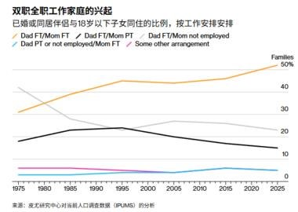
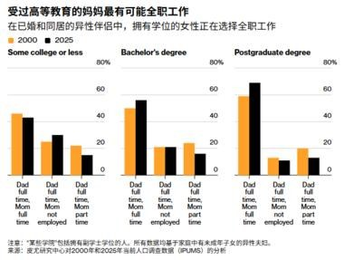
一句话核心：美国双职工（父母都全职上班）家庭创纪录达到 52%，且越高学历的妈妈越倾向全职工作。
背景与关键数据：皮尤研究中心（Pew Research）是美国权威民调机构。52% 这个数字反映了女性劳动参与率的长期上升和"双收入才供得起生活"的现实。
图片解读：
- 图片一「双职全职工作家庭的兴起」：横轴 1975–2025，画"已婚/同居且有 18 岁以下子女"的家庭按工作安排分类。橙线"爸爸全职/妈妈全职"持续上升，到 2025 年接近 50%（成为最主流安排）；而灰线"爸爸全职/妈妈不工作"（传统单职工模式）一路下滑。
- 图片二「受过高等教育的妈妈最有可能全职工作」：按学历分三组（大专及以下 / 本科 / 研究生），对比 2000 vs 2025。学历越高，"爸妈都全职"的比例越高，研究生组最为明显。
为什么重要 / 对市场和经济的含义：双职工比例上升对经济有多重含义——拉高家庭可支配收入（利好消费）、推升对托儿/家政服务的需求、也反映"单一收入难以维持中产生活"的成本压力。对理解美国消费韧性和劳动力市场结构有帮助。
延伸知识：这背后是劳动经济学里的"女性劳动参与率"长期趋势，以及"双收入陷阱"（two-income trap）假说——当多数家庭变成双收入后，房价、学区等竞争性商品的价格会被双收入购买力推高，结果是"两个人工作才买得起过去一个人能买的房子"，家庭并没有变得更轻松。这也是理解发达国家生育率下降的一条线索。
第 13 篇 14:56 #金融
帖子原文
瑞银：5 月中国信贷数据结构很弱，主要靠票据融资撑住；存款继续从居民存款流向非银存款，说明资金在理财、基金等渠道之间迁移。我们仍看好中国银行股，理由是 2026 年可能是净息差、净利息收入、营收和拨备前利润的拐点，但短期信用需求弱说明实体经济内生动能仍不足。过去一个月中国银行股表现不错。MSCI 中国银行指数上涨 2.7%，明显跑赢 MSCI 中国指数的 -6.3%。H 股银行中，中国银行 H 股表现最好，单月上涨 5.9%；中信银行 H 股表现最弱，下跌 6.0%。A 股银行指数单月上涨 4.1%，跑赢沪深 300 的 -2.8%，其中建设银行 A 股表现最好，上涨 9.9%。虽然宏观信贷数据偏弱，但银行股并没有跟着走弱，反而成为防御和高股息资金的避风港。银行股上涨，不代表实体融资需求强；更多代表市场在买高股息、防御、估值修复和净息差拐点。中国金融系统现在不是缺钱，而是缺好贷款需求。H 股银行平均股息率约 5.3%，2026 年 P/B 约 0.52 倍，2026 年 P/E 约 5.7 倍，ROAE 约 9.1%。A 股银行平均股息率约 4.8%，2026 年 P/B 约 0.61 倍，2026 年 P/E 约 6.2 倍。#金融
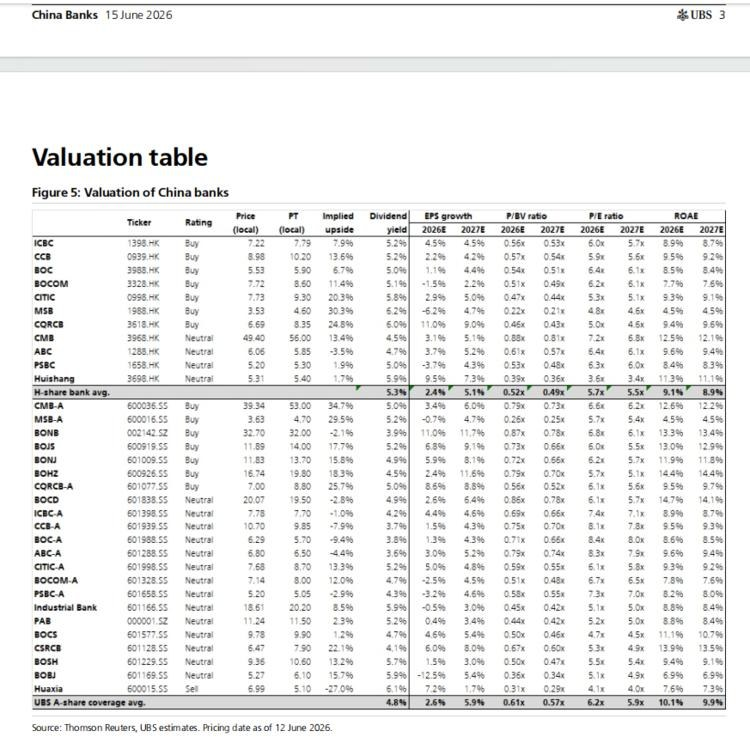
一句话核心：信贷数据很弱（靠票据撑场面），但银行股反而涨——因为资金在买"高股息+防御"，瑞银看好 2026 年银行净息差见底回升。
背景与关键数据：名词速解：票据融资=短期、低质量的信贷，靠它撑总量说明"真实贷款需求弱"。净息差（NIM）=银行存贷利差，是银行最核心的盈利来源。P/B=市净率（0.52 倍意味着股价只有净资产的一半，破净）。ROAE=净资产收益率。股息率 5.3% 在低利率环境里非常吸引追求稳定收益的资金。"居民存款→非银存款"指老百姓把定期存款搬去买理财/基金（"存款搬家"）。
图片解读：图为瑞银的中国银行股估值表（Valuation table），逐行列出各家银行（工行、建行、招行、中信等）的目标价、评级、股息率、P/B、P/E、ROAE 等指标。表格非常密集、分辨率有限，难以逐格辨认，核心汇总数据即正文给出的那组行业平均值（H 股 P/B 0.52、股息率 5.3% 等）。
为什么重要 / 对市场和经济的含义："中国不缺钱、缺好贷款需求"是理解当前货币环境的金句——央行放再多水，如果企业和居民不愿借钱投资/消费，钱就淤在金融体系里空转（流向理财、银行股高股息）。银行股逆势上涨本身就是"资金找不到好去处、退而求其次买防御"的信号，是弱经济的另类印证，而非强复苏。
延伸知识：这其实是"资产荒"现象——当实体回报率下降、利率走低时，能提供稳定现金流的资产（高股息银行股、红利股、长债）会被资金疯抢，估值被推高。日本"失去的二十年"里也出现过类似的"高股息防御股长牛"。所以银行股的高股息行情，一半是利好（拐点预期），一半是无奈（没有更好的去处）。
第 14 篇 14:49 #金融
帖子原文
zerohedge：世界黄金协会发布了《2026 年央行黄金储备调查》。其中最重要的结论是：创纪录的 45% 受访者预计，未来 12 个月内本机构的黄金储备将增加。过去四年，全球央行平均每年增持约 1000 吨黄金，显著高于此前十年约 500 吨的年均水平。世界黄金协会 2026 年央行黄金储备调查于 2 月 5 日至 5 月 19 日之间进行。和此前调查结果类似，央行继续对黄金持积极预期。绝大多数受访者，比例达到 89%，认为未来 12 个月全球央行黄金储备将继续增加。黄金在危机时期的表现、投资组合多元化以及通胀对冲，是央行持有黄金的一些关键原因。此外，黄金作为地缘政治风险对冲工具，以及作为储备多元化政策的一部分，也成为央行提高黄金配置的重要理由。多数受访者，比例为 74%，认为未来五年全球储备中的美元持有比例将温和或显著下降。受访者还认为，欧元、人民币等其他货币在储备中的占比将在同一时期保持不变，而黄金占比将上升。今年的调查还询问受访者将如何为新增黄金购买提供资金。一半受访者表示，会通过本币国内购买计划买入黄金；另有 38% 表示，会通过出售现有储备资产来购买黄金。在黄金存放地点方面，英格兰银行仍然是最受欢迎的金库地点，57% 的受访者选择它。不过，央行仍在继续把黄金存放地点分散到多个地方。国内存储排名第二，占 49%；国际清算银行排名第三，占 16%，比去年略有上升。瑞士国家银行的偏好度明显下降，从 2025 年的 12% 降至 6%。#金融
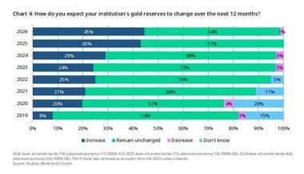
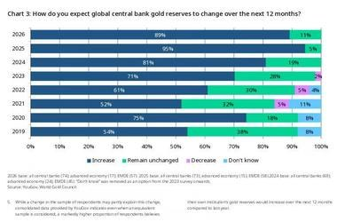
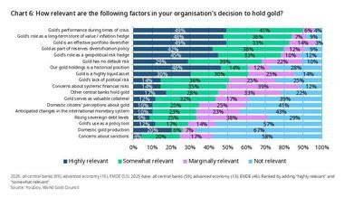
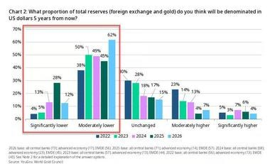
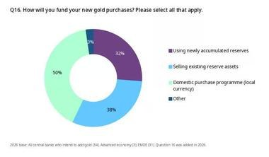
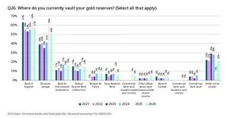
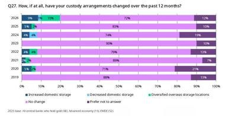
一句话核心：世界黄金协会 2026 央行调查——创纪录 45% 的央行计划增持黄金、74% 认为美元储备占比会降，"去美元、买黄金"成为全球央行的共识方向。
背景与关键数据：央行（各国官方储备管理者）是黄金市场最有分量的"长钱"。过去四年年均增持约 1000 吨，是更早十年（约 500 吨）的两倍——这是金价这几年走强的最重要结构性买盘。增持理由：危机表现好、组合多元化、通胀对冲、地缘对冲、储备去美元化。
图片解读（这组图是调查的核心问卷结果）：
- 图 1 / Chart 4「贵机构未来 12 个月黄金储备如何变化」：选"增加"的比例从 2019 年 8% 逐年攀升到 2026 年 45%（创纪录），"维持不变"54%，几乎无人选"减少"。
- 图 2 / Chart 3「全球央行整体黄金储备未来 12 个月如何变化」：89% 认为会增加（2019 年仅 54%），共识极强。
- 图 4 / Chart 6「持有黄金的考量因素」：危机表现、长期保值/通胀对冲、组合多元化、地缘对冲位列前茅（"高度相关"占比最高）。
- 图 5 / Chart 2「5 年后美元在储备中的占比预期」：选"温和/显著下降"的合计大幅领先，2026 年约 62% 选"温和下降"——去美元化预期强烈。
- 图 6 / Q16「如何为增持黄金融资」：50% 用本币国内购买计划、38% 卖出现有储备资产、32% 用新增储备。
- 图 7 / Q26「黄金存放地点」：英格兰银行 57% 居首，国内存储 49% 次之，国际清算银行 16%。
- 图 8 / Q27「过去 12 个月托管安排如何变化」：越来越多央行选择"增加国内存储 / 分散海外存储地点"。
为什么重要 / 对市场和经济的含义：这是黄金长期牛市最硬的基本面支撑——不是散户炒作，而是各国央行的国家级配置转向。叠加瑞银预测金价均价 5000 美元（第 4 篇），构成"央行去美元 + 地缘避险 + 通胀对冲"三重买金逻辑。同时"74% 看空美元储备占比"对美元长期信用是个警示信号。
延伸知识：储备货币多元化 / 去美元化是后疫情时代的大叙事。2022 年俄罗斯外汇储备被冻结后，各国央行意识到"美元储备可能被武器化"，于是加速把一部分储备从美债换成黄金（黄金没有交易对手风险、不会被冻结）。央行存金地点的分散（减少存在他国、增加国内）也是同一逻辑的延伸——把"压箱底的钱"放在自己够得着的地方。这股力量是结构性、慢变量，但持续性极强。
第 15 篇 14:44 #金融
帖子原文
兴业：面对 5 月数据，统计局发言人提到"当前外部不确定因素较多，企业经营成本压力有所加大，部分企业还面临一些困难"。对于是否出台逆周期政策，目前来看可能性不大，统计局传递的信号是"精准助企纾困"。对于债市来说，需求仍在退坡，支持长端利率修复。需求端数据进一步放缓，一定程度上提高了市场对降准降息的期待。从时点来看，若二季度经济增速放缓至 4.5% 左右，降准可能最早在 7 月兑现，释放宽松信号的同时，也可有效配合政府债发行。全面降息的门槛偏高，需要较大外部冲击，或者国内经济增长明显低于全年目标。结构性降息的可能性大于全面降息，如政策利率从 7 天调整为隔夜、存款利率下调等。6-7 月的债市行情，更多受益于理财规模的增加，信用债修复或更为显著。#金融
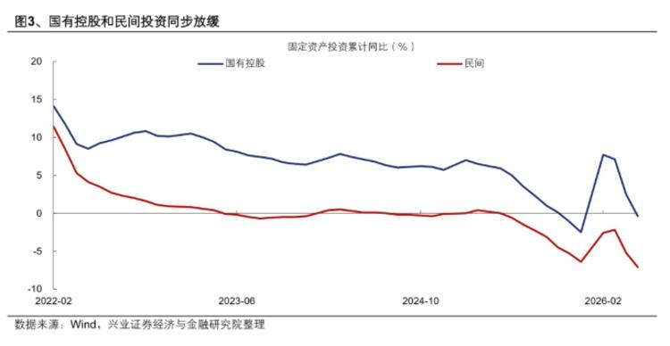
一句话核心：兴业判断官方不会大刺激（"精准助企纾困"），但若二季度 GDP 滑到 4.5%，7 月可能降准；全面降息门槛高，更可能是结构性宽松，债市（尤其信用债）受益。
背景与关键数据：名词速解。逆周期政策=经济下行时政府主动放水对冲。降准（降存款准备金率）=释放银行可贷资金，是"放量"工具；降息=降低资金价格，是"降价"工具。结构性降息指不全面降，而是定向调整（如把政策利率期限从 7 天改隔夜、或单独下调存款利率）。"理财规模增加→信用债修复"指存款搬家到理财后，理财要配置债券，推动信用债上涨。
图片解读：图 3「国有控股和民间投资同步放缓」，画固定资产投资累计同比（%），横轴 2022-02 到 2026 年初。**蓝线（国有控股）**在 2026 年初一度反弹到约 +7.5% 后又回落到 0 附近；红线（民间投资）则持续下行，2026 年初跌到约 -7% 的深度负增长。两条线一起走弱，尤其民间投资深度负增长，说明民营企业几乎不愿意投资了——这是内生动能不足最直接的证据。
为什么重要 / 对市场和经济的含义：民间投资是经济"内生活力"的核心。它深度负增长 = 民企对未来没信心、不敢扩张，这种情况下光靠国企投资托底难以持续。这也是兴业判断"7 月可能降准"的依据——需求太弱，需要货币政策配合。对债市，需求弱+宽松预期=利率下行、债券上涨（"长端利率修复"）。
延伸知识："降准 vs 降息"的区别值得记牢：降准是"给银行更多子弹"（数量工具），降息是"让子弹更便宜"（价格工具）。在"不缺钱、缺需求"的环境里（呼应第 13 篇），降准的边际效果有限（银行有钱但放不出去），所以市场更关注降息和结构性工具。兴业说"结构性降息可能性大于全面降息"，反映的正是政策在"既要稳增长、又要防止大水漫灌推高风险"之间的精细权衡。
第 16 篇 14:35 #其他国家经济
帖子原文
zerohedge：内塔尼亚胡将自己的政治未来押注在与特朗普的关系上，但随着美国总统与伊朗达成了一项以色列大部分人反对的协议，这已成为一种负担。以色列鹰派开始对内塔尼亚胡进行讨伐。#其他国家经济
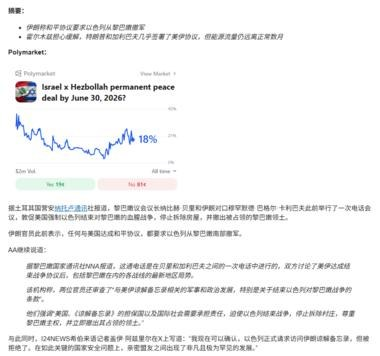
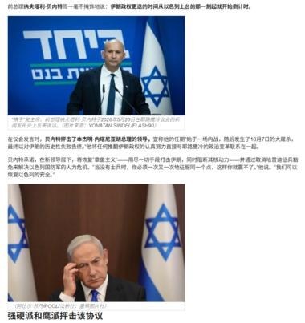
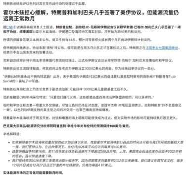
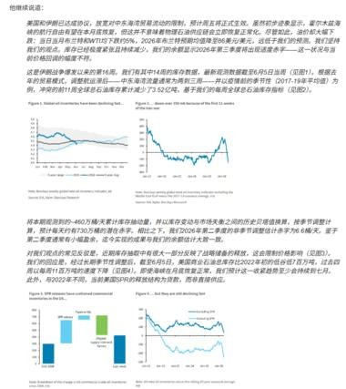
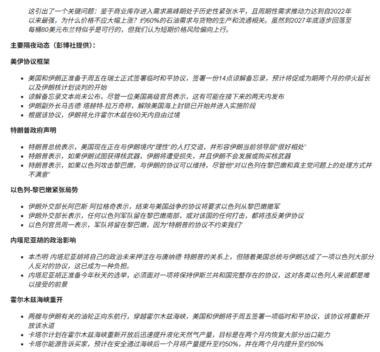
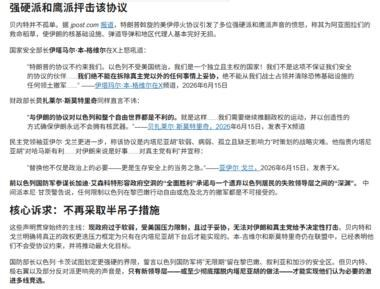
一句话核心：特朗普促成的美伊协议遭以色列国内反对，内塔尼亚胡押注特朗普的赌注变成政治负担，鹰派群起讨伐；市场对中东"永久和平"仍高度怀疑。
背景与关键数据：这篇文字很短，但配的 6 张图信息量极大，是一篇完整的地缘 + 油市分析。
图片解读：
- 图 1（Polymarket）：预测市场"以色列与真主党 6 月 30 日前达成永久和平协议"的概率只有 18%——市场认为短期内真正和平的可能性很低。
- 图 5、图 6（人物照片）：以色列前总理纳夫塔利·贝内特（Naftali Bennett）和现总理内塔尼亚胡的照片，配文"强硬派和鹰派抨击该协议"——展示以色列内部政治分裂。
- 图 2、图 4（新闻正文）：CNN/报道复述协议进展——特朗普与加利巴夫几乎签署美伊协议、霍尔木兹海峡能源流量仍正常、各阶段动态（美伊议程、特朗普政府声明、以色列-黎巴嫩谈判、内塔尼亚胡的法律处境）等。
- 图 3（油市图表 Figure 1–6）：拆解全球原油库存（多在下降）、海湾地区库存、SPR（美国战略石油储备）、商业库存等。核心信号是"霍尔木兹海峡若保持畅通，油价缺乏持续上行动力"——和第 4、9 篇的油价判断一致。
为什么重要 / 对市场和经济的含义：这篇把"地缘政治"和"油价/资产价格"直接打通。逻辑链是：特朗普推动美伊缓和 → 霍尔木兹海峡通畅、油价缺乏上行动力 → 利好风险资产、压低通胀。但 Polymarket 只给 18% 概率提醒：和平脆弱、以色列内部反对强烈，地缘风险随时可能反复。对投资者，这意味着"和平交易"（做空油价、做多股票）有逻辑但不能满仓押注。
延伸知识：**预测市场（如 Polymarket）**是一种用真金白银投票的"群众智慧"工具——参与者下注事件结果，赔率反映市场对概率的集体判断，通常比专家预测更校准。18% 的低概率说明：尽管新闻在炒"和平协议"，但下注的人并不相信它能很快落地。学会看预测市场赔率，能帮你给新闻"祛魅"，区分"叙事热度"和"真实概率"。霍尔木兹海峡则是地缘+能源的经典交汇点——全球约 1/5、海湾约 1/3 的原油经此出口，它的任何风吹草动都会被油市第一时间定价。
今日全图索引
| 帖号 | 时间 | 主题 | 标签 | 图片文件 |
|---|---|---|---|---|
| 1 | 16:15 | 华泰：新经济挤出旧经济（薪酬/税费） | #经济数据 | post1_img1 |
| 2 | 16:08 | 摩根士丹利：中国车企冲击欧洲车企 | #经济数据 | post2_img1 |
| 3 | 16:02 | 华创：5 月 GDP 约 4.4%、投资环比转负 | #经济数据 | post3_img1, post3_img2 |
| 4 | 15:56 | 瑞银：2026 资产配置（黄金 5000、做多德债） | #金融 | post4_img1 |
| 5 | 15:45 | 高盛：二手房价一年再跌 5–10% | #房价 | post5_img1, post5_img2 |
| 6 | 15:41 | 申万：涨价反噬通信器材消费 | #经济数据 | post6_img1 |
| 7 | 15:37 | bloomberg：中国对外援助预算 249 亿 | #TAX | post7_img1 |
| 8 | 15:34 | 高盛：端午白酒动销疲软、批价平淡 | #经济数据 | post8_img1 |
| 9 | 15:30 | bloomberg：美伊和平协议 14 条草案 | #金融 | post9_img1~3 |
| 10 | 15:22 | zerohedge：日本央行加息至 1%（1995 来首次） | #金融 | post10_img1 |
| 11 | 15:09 | 花旗：中国"滞胀"风险、K 型经济 | #经济数据 | post11_img1, post11_img2 |
| 12 | 15:00 | bloomberg：美国双职工家庭创纪录 52% | #其他国家经济 | post12_img1, post12_img2 |
| 13 | 14:56 | 瑞银：信贷弱但银行股涨（高股息避风港） | #金融 | post13_img1 |
| 14 | 14:49 | 世界黄金协会：央行创纪录计划增持黄金 | #金融 | post14_img1~9 |
| 15 | 14:44 | 兴业：7 月或降准、债市受益 | #金融 | post15_img1 |
| 16 | 14:35 | zerohedge：内塔尼亚胡押注特朗普成负担 | #其他国家经济 | post16_img1~6 |
本报告由 trading_analysis 项目自动抓取生成，仅供学习与跟读参考，不构成任何投资建议。图片版权归原研报机构/媒体所有。